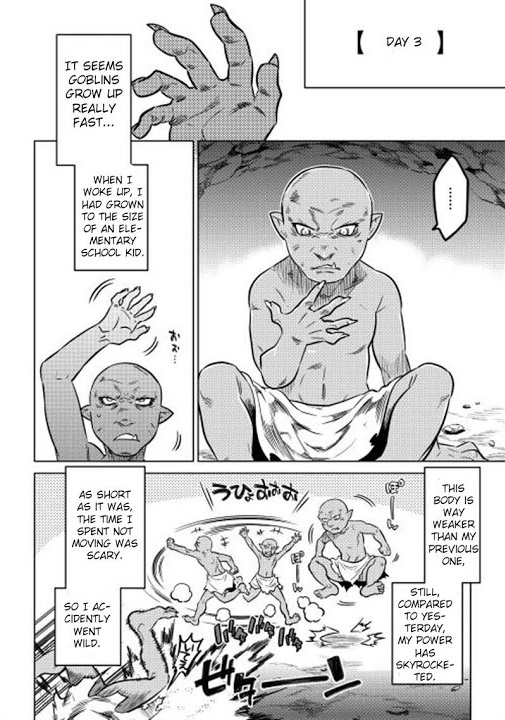

I stopped running away from reality since I have already reincarnated, and determined to survive in my second life as long as possible. In my previous job, I learned that having the capability to quickly change one’s thinking and adapting is an indispensable skill. I also learned how unfair and cruel life can be from there.
Apparently, the growth of a goblin is characteristically fast. Even though it's only the third day since my birth, my body has been growing rapidly while I was sleeping.
While my body used to be that of a baby before I went to sleep, its figure is now that of an elementary student’s. Although it's still vastly weaker than my body before my reincarnation, compared to yesterday, my body’s power had sky-rocketed. Now I can stand up and even run at moderate speeds, so I felt indescribably happy. Although it's childish, I started frolicking around instinctively because the stress of being unable to move as I liked had accumulated.
Well, when you think about it, this growth rate may be something to be expected from goblins. When compared to the civilization built by humans, who can grow up without worry of being attacked by a foreign enemy, goblins must participate in the fierce struggle for survival shortly after their birth. As a result, humans grow slower than goblins who live in the wild, where the law of the jungle forced them to grow faster to quickly produce new offspring and to adapt to their environment.
Since I can move now, I spent my time today learning my new body’s limits. I performed various exercises with my body till I got used to it, and eventually collapsed from exhaustion.Still, this bed… isn't there anything better?